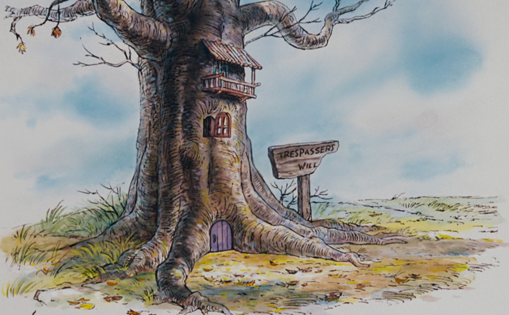

Pooh, yang menyukai madu dan suka mengarang lagu, tinggal di Hutan Seratus Ekar bersama teman-temannya: Piglet yang pemalu, Christopher Robin yang dewasa dan pintar, Eeyore yang sinis dan pesimis, Rabbit yang cerewet, Owl yang bijaksana, juga tetangga baru mereka, Kanga, sang ibu kanguru, dan Roo, anaknya yang lucu..
SelengkapnyaPooh, yang menyukai madu dan suka mengarang lagu, tinggal di Hutan Seratus Ekar bersama teman-temannya: Piglet yang pemalu, Christopher Robin yang dewasa dan pintar, Eeyore yang sinis dan pesimis, Rabbit yang cerewet, Owl yang bijaksana, juga tetangga baru mereka, Kanga, sang ibu kanguru, dan Roo, anaknya yang lucu.
Pooh, yang menyukai madu dan suka mengarang lagu, tinggal di Hutan Seratus Ekar bersama teman-temannya: Piglet yang pemalu, Christopher Robin yang dewasa dan pintar, Eeyore yang sinis dan pesimis, Rabbit yang cerewet, Owl yang bijaksana, juga tetangga baru mereka, Kanga, sang ibu kanguru, dan Roo, anaknya yang lucu.
Pooh, yang menyukai madu dan suka mengarang lagu, tinggal di Hutan Seratus Ekar bersama teman-temannya: Piglet yang pemalu, Christopher Robin yang dewasa dan pintar, Eeyore yang sinis dan pesimis, Rabbit yang cerewet, Owl yang bijaksana, juga tetangga baru mereka, Kanga, sang ibu kanguru, dan Roo, anaknya yang lucu.